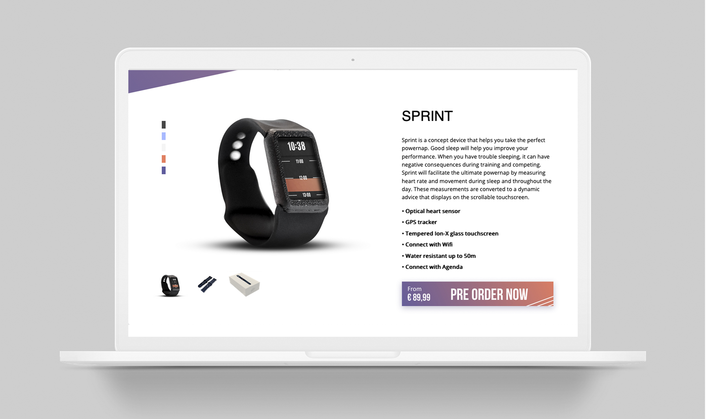
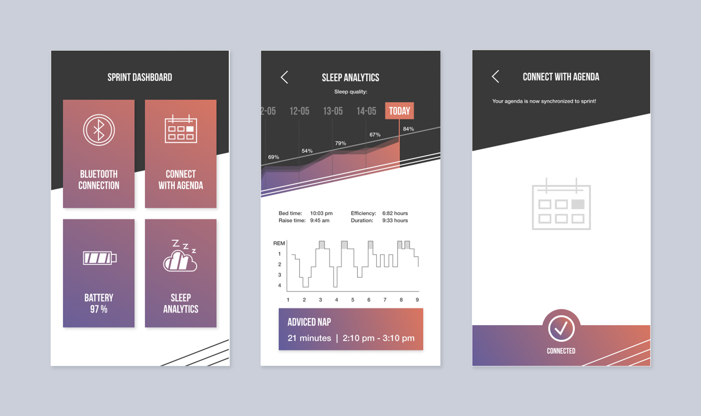

De opdracht
Bedenk een wearable voor een doelgroep die moeite heeft met slapen.

Wat
De wearable voor de perfecte powernap gecombineerd met de Sprint App kunnen topsporters hun prestaties verbeteren door het advies van Sprint om een powernap te nemen op een specifiek tijdstip.
Mijn taak
Sprint heb ik in een teamverband gemaakt, samen met twee klasgenoten. Zij namen de verantwoording over de wearable waar veel techniek bij kwam kijken. Ik ging mij verdiepen in het design van het schermpje van de wearable, de onepager en de bijbehorende app:
Proces
Tijdens dit project hebben we veel deskresearch gedaan. Wat houdt een powernap in? Welke materialen zijn mogelijk en prettig om je pols? Moet de wearable wel om je pols voor de beste resultaten van gegevens? Het bandje is meerdere malen aangepast om het aangenamer te maken voor de sporter. We hebben ook workshops (aangeboden door CMD) gevolgd over interactie, branding, audio en voice controles en prototypes bouwen. Deze workshops hebben ervoor gezorgd dat wij tot een eindresultaat zijn gekomen.